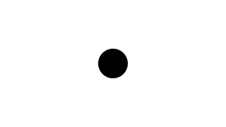
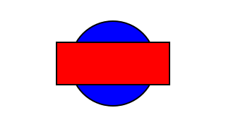
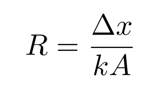

| Copyright | Written by David Himmelstrup |
|---|---|
| License | Unlicense |
| Maintainer | lemmih@gmail.com |
| Stability | experimental |
| Portability | POSIX |
| Safe Haskell | None |
| Language | Haskell2010 |
Reanimate
Description
Reanimate is an animation library based on SVGs. It is designed to act like glue between external components such as 'latex', 'ffmpeg', 'gnuplot', 'diagrams', and 'povray'.
Canvas
Reanimate uses its own internal, Cartesian coordinate system for animations, with a fixed canvas size of 16x9, where X and Y are real numbers. (0, 0) is located in the center of the canvas, with positive X going to the right, and positive Y going up. This means that e.g. (8, 4.5) is the top right corner and (-8, -4.5) is the bottom left corner. Note that this canvas size does not affect how large or small output resolution will be, although it does affect aspect ratio.
Driver
Reanimate features a web-based viewer which is opened by default if no other parameters are given. Key features:
- This viewer listens for changes to the source file and recompiles the code automatically as needed.
- Animations are rendered with increasing fidelity until the frame rate reaches 60 fps.
- Key commands for pausing, frame stepping, forward/rewind. To pause press SPACE, to move -1/+1/-10/+10 frames use LEFT/RIGHT/DOWN/UP arrow keys.
Synopsis
- reanimate :: Animation -> IO ()
- reanimateLive :: IO String
- reanimateLiveEntry :: String -> IO String
- type SVG = Tree
- type Time = Double
- type Duration = Double
- data Animation
- mkAnimation :: Duration -> (Time -> SVG) -> Animation
- animate :: (Time -> SVG) -> Animation
- staticFrame :: Duration -> SVG -> Animation
- duration :: Animation -> Duration
- frameAt :: Time -> Animation -> SVG
- seqA :: Animation -> Animation -> Animation
- parA :: Animation -> Animation -> Animation
- parLoopA :: Animation -> Animation -> Animation
- parDropA :: Animation -> Animation -> Animation
- pause :: Duration -> Animation
- andThen :: Animation -> Animation -> Animation
- mapA :: (SVG -> SVG) -> Animation -> Animation
- pauseAtEnd :: Duration -> Animation -> Animation
- pauseAtBeginning :: Duration -> Animation -> Animation
- pauseAround :: Duration -> Duration -> Animation -> Animation
- adjustDuration :: (Duration -> Duration) -> Animation -> Animation
- setDuration :: Duration -> Animation -> Animation
- reverseA :: Animation -> Animation
- playThenReverseA :: Animation -> Animation
- repeatA :: Double -> Animation -> Animation
- freezeAtPercentage :: Time -> Animation -> Animation
- addStatic :: SVG -> Animation -> Animation
- signalA :: Signal -> Animation -> Animation
- type Signal = Double -> Double
- constantS :: Double -> Signal
- fromToS :: Double -> Double -> Signal
- reverseS :: Signal
- curveS :: Double -> Signal
- powerS :: Double -> Signal
- bellS :: Double -> Signal
- oscillateS :: Signal
- cubicBezierS :: (Double, Double, Double, Double) -> Signal
- data Scene s a
- type ZIndex = Int
- scene :: (forall s. Scene s a) -> Animation
- play :: Animation -> Scene s ()
- fork :: Scene s a -> Scene s a
- queryNow :: Scene s Time
- wait :: Duration -> Scene s ()
- waitUntil :: Time -> Scene s ()
- waitOn :: Scene s a -> Scene s a
- adjustZ :: (ZIndex -> ZIndex) -> Scene s a -> Scene s a
- withSceneDuration :: Scene s () -> Scene s Duration
- data Var s a
- newVar :: a -> Scene s (Var s a)
- readVar :: Var s a -> Scene s a
- writeVar :: Var s a -> a -> Scene s ()
- modifyVar :: Var s a -> (a -> a) -> Scene s ()
- tweenVar :: Var s a -> Duration -> (a -> Time -> a) -> Scene s ()
- simpleVar :: (a -> SVG) -> a -> Scene s (Var s a)
- findVar :: (a -> Bool) -> [Var s a] -> Scene s (Var s a)
- data Sprite s
- data Frame s a
- unVar :: Var s a -> Frame s a
- spriteT :: Frame s Time
- spriteDuration :: Frame s Duration
- newSprite :: Frame s SVG -> Scene s (Sprite s)
- newSprite_ :: Frame s SVG -> Scene s ()
- newSpriteA :: Animation -> Scene s (Sprite s)
- newSpriteA' :: Sync -> Animation -> Scene s (Sprite s)
- newSpriteSVG :: SVG -> Scene s (Sprite s)
- newSpriteSVG_ :: SVG -> Scene s ()
- destroySprite :: Sprite s -> Scene s ()
- applyVar :: Var s a -> Sprite s -> (a -> SVG -> SVG) -> Scene s ()
- spriteModify :: Sprite s -> Frame s ((SVG, ZIndex) -> (SVG, ZIndex)) -> Scene s ()
- spriteMap :: Sprite s -> (SVG -> SVG) -> Scene s ()
- spriteTween :: Sprite s -> Duration -> (Double -> SVG -> SVG) -> Scene s ()
- spriteVar :: Sprite s -> a -> (a -> SVG -> SVG) -> Scene s (Var s a)
- spriteE :: Sprite s -> Effect -> Scene s ()
- spriteZ :: Sprite s -> ZIndex -> Scene s ()
- spriteScope :: Scene s a -> Scene s a
- type Effect = Duration -> Time -> Tree -> Tree
- overBeginning :: Duration -> Effect -> Effect
- overEnding :: Duration -> Effect -> Effect
- overInterval :: Time -> Time -> Effect -> Effect
- reverseE :: Effect -> Effect
- delayE :: Duration -> Effect -> Effect
- applyE :: Effect -> Animation -> Animation
- constE :: (Tree -> Tree) -> Effect
- fadeInE :: Effect
- fadeOutE :: Effect
- fadeLineInE :: Double -> Effect
- fadeLineOutE :: Double -> Effect
- drawInE :: Effect
- drawOutE :: Effect
- fillInE :: Effect
- scaleE :: Double -> Effect
- translateE :: Double -> Double -> Effect
- aroundCenterE :: Effect -> Effect
- module Reanimate.Svg.Constructors
- module Reanimate.Svg.LineCommand
- module Reanimate.Svg.BoundingBox
- module Reanimate.Svg
- mkImage :: Double -> Double -> FilePath -> SVG
- embedImage :: PngSavable a => Image a -> SVG
- embedDynamicImage :: DynamicImage -> SVG
- embedPng :: Double -> Double -> ByteString -> SVG
- raster :: SVG -> DynamicImage
- rasterSized :: Width -> Height -> SVG -> DynamicImage
- svgAsPngFile :: SVG -> FilePath
- svgAsPngFile' :: Width -> Height -> SVG -> FilePath
- vectorize :: FilePath -> SVG
- vectorize_ :: [String] -> FilePath -> SVG
- latex :: Text -> Tree
- latexAlign :: Text -> Tree
- xelatex :: Text -> Tree
- ctex :: Text -> Tree
- povray :: [String] -> Text -> Tree
- povray' :: [String] -> Text -> FilePath
- blender :: Text -> SVG
- blender' :: Text -> FilePath
- turbo :: Double -> PixelRGB8
- viridis :: Double -> PixelRGB8
- magma :: Double -> PixelRGB8
- inferno :: Double -> PixelRGB8
- plasma :: Double -> PixelRGB8
- sinebow :: Double -> PixelRGB8
- parula :: Double -> PixelRGB8
- cividis :: Double -> PixelRGB8
- jet :: Double -> PixelRGB8
- hsv :: Double -> PixelRGB8
- hsvMatlab :: Double -> PixelRGB8
- greyscale :: Double -> PixelRGB8
- screenWidth :: Fractional a => a
- screenHeight :: Fractional a => a
- screenTop :: Fractional a => a
- screenBottom :: Fractional a => a
- screenLeft :: Fractional a => a
- screenRight :: Fractional a => a
- defaultDPI :: Dpi
- defaultStrokeWidth :: Double
- pFPS :: FPS
- pHeight :: Height
- pWidth :: Width
Documentation
reanimate :: Animation -> IO () Source #
Main entry-point for accessing an animation. Creates a program that takes the following command-line arguments:
Usage: PROG [COMMAND]
This program contains an animation which can either be viewed in a web-browser
or rendered to disk.
Available options:
-h,--help Show this help text
Available commands:
check Run a system's diagnostic and report any missing
external dependencies.
view Play animation in browser window.
render Render animation to file.Neither the 'check' nor the 'view' command take any additional arguments. Rendering animation can be controlled with these arguments:
Usage: PROG render [-o|--target FILE] [--fps FPS] [-w|--width PIXELS]
[-h|--height PIXELS] [--compile] [--format FMT]
[--preset TYPE]
Render animation to file.
Available options:
-o,--target FILE Write output to FILE
--fps FPS Set frames per second.
-w,--width PIXELS Set video width.
-h,--height PIXELS Set video height.
--compile Compile source code before rendering.
--format FMT Video format: mp4, gif, webm
--preset TYPE Parameter presets: youtube, gif, quick
-h,--help Show this help textreanimateLive :: IO String Source #
Load a reanimate program in GHCi and make sure main is available.
Then run:
:cmd reanimateLive
This works by sending the commands ':r' and ':main' to your GHCi instance when any source file is changed.
reanimateLiveEntry :: String -> IO String Source #
Load an animation in GHCi. Anything of type Animation can be live reloaded.
:cmd reanimateLiveEntry "drawCircle"
This works by sending the commands ':r' and 'Reanimate.reanimate {entry}' to your GHCi instance when any source file is changed.
Animations
mkAnimation :: Duration -> (Time -> SVG) -> Animation Source #
Construct an animation with a given duration.
staticFrame :: Duration -> SVG -> Animation Source #
Create an animation with provided duration, which consists of stationary frame displayed for its entire duration.
frameAt :: Time -> Animation -> SVG Source #
Calculate the frame that would be displayed at given point in time of running animation.
The provided time parameter is clamped between 0 and animation duration.
Composition
seqA :: Animation -> Animation -> Animation Source #
Play animations in sequence. The lhs animation is removed after it has
completed. New animation duration is 'duration lhs + duration rhs'.
Example:
drawBox`seqA`drawCircle

parA :: Animation -> Animation -> Animation Source #
Play two animation concurrently. Shortest animation freezes on last frame.
New animation duration is 'max (duration lhs) (duration rhs)'.
Example:
drawBox`parA`adjustDuration(*2)drawCircle
parLoopA :: Animation -> Animation -> Animation Source #
Play two animation concurrently. Shortest animation loops.
New animation duration is 'max (duration lhs) (duration rhs)'.
Example:
drawBox`parLoopA`adjustDuration(*2)drawCircle
parDropA :: Animation -> Animation -> Animation Source #
Play two animation concurrently. Animations disappear after playing once.
New animation duration is 'max (duration lhs) (duration rhs)'.
Example:
drawBox`parDropA`adjustDuration(*2)drawCircle

andThen :: Animation -> Animation -> Animation Source #
Play left animation and freeze on the last frame, then play the right
animation. New duration is 'duration lhs + duration rhs'.
Example:
drawBox`andThen`drawCircle


pauseAtBeginning :: Duration -> Animation -> Animation Source #
Freeze the first frame for t seconds at the beginning of the animation.
Example:
pauseAtBeginning1drawProgress

pauseAround :: Duration -> Duration -> Animation -> Animation Source #
Freeze the first and the last frame of the animation for a specified duration.
Example:
pauseAround1 1drawProgress
adjustDuration :: (Duration -> Duration) -> Animation -> Animation Source #
Change the duration of an animation. Animates are stretched or squished (rather than truncated) to fit the new duration.
setDuration :: Duration -> Animation -> Animation Source #
Set the duration of an animation by adjusting its playback rate. The animation is still played from start to finish without being cropped.
reverseA :: Animation -> Animation Source #
Play an animation in reverse. Duration remains unchanged. Shorthand for:
signalA reverseS
Example:
reverseAdrawCircle

playThenReverseA :: Animation -> Animation Source #
Play animation before playing it again in reverse. Duration is twice the duration of the input.
Example:
playThenReverseAdrawCircle

repeatA :: Double -> Animation -> Animation Source #
Loop animation n number of times. This number may be fractional and it
may be less than 1. It must be greater than or equal to 0, though.
New duration is n*duration input.
Example:
repeatA1.5drawCircle
Arguments
| :: Time | value between 0 and 1. The frame displayed at this point in the original animation will be displayed for the duration of the new animation |
| -> Animation | original animation, from which the frame will be taken |
| -> Animation | new animation consisting of static frame displayed for the duration of the original animation |
freezeAtPercentage time animation creates an animation consisting of stationary frame,
that would be displayed in the provided animation at given time.
The duration of the new animation is the same as the duration of provided animation.
addStatic :: SVG -> Animation -> Animation Source #
Overlay animation on top of static SVG image.
Example:
addStatic(mkBackground"lightblue")drawCircle
signalA :: Signal -> Animation -> Animation Source #
Modify the time component of an animation. Animation duration is unchanged.
Example:
signalA(fromToS0.25 0.75)drawCircle

Easing functions
type Signal = Double -> Double Source #
Signals are time-varying variables. Signals can be composed using function composition.


curveS :: Double -> Signal Source #
S-curve signal. Takes a steepness parameter. 2 is a good default.
Example:
signalA(curveS2)drawProgress
powerS :: Double -> Signal Source #
Power curve signal. Takes a steepness parameter. 2 is a good default.
Example:
signalA(powerS2)drawProgress

bellS :: Double -> Signal Source #
Bell-curve signal. Takes a steepness parameter. 2 is a good default.
Example:
signalA(bellS2)drawProgress

oscillateS :: Signal Source #

cubicBezierS :: (Double, Double, Double, Double) -> Signal Source #
Cubic Bezier signal. Gives you a fair amount of control over how the signal will curve.
Example:
signalA(cubicBezierS(0.0, 0.8, 0.9, 1.0))drawProgress

Scenes
A Scene represents a sequence of animations and variables
that change over time.
The ZIndex property specifies the stack order of sprites and animations. Elements with a higher ZIndex will be drawn on top of elements with a lower index.
play :: Animation -> Scene s () Source #
Play an animation once and then remove it. This advances the clock by the duration of the animation.
Example:
doplaydrawBoxplaydrawCircle

fork :: Scene s a -> Scene s a Source #
Execute actions in a scene without advancing the clock. Note that scenes do not end before all forked actions have completed.
Example:
dofork$playdrawBoxplaydrawCircle
queryNow :: Scene s Time Source #
Query the current clock timestamp.
Example:
do now <-playdrawCircle*>queryNowplay$staticFrame1 $scale2 $withStrokeWidth0.05 $mkText$ "Now=" <> T.pack (show now)

Variables
newVar :: a -> Scene s (Var s a) Source #
Create a new variable with a default value. Variables always have a defined value even if they are read at a timestamp that is earlier than when the variable was created. For example:
do v <-fork(wait10 >>newVar0) -- Create a variable at timestamp '10'.readVarv -- Read the variable at timestamp '0'. -- The value of the variable will be '0'.

modifyVar :: Var s a -> (a -> a) -> Scene s () Source #
Modify the value of a variable at the current timestamp and all future timestamps.
tweenVar :: Var s a -> Duration -> (a -> Time -> a) -> Scene s () Source #
Modify a variable between now and now+duration.
simpleVar :: (a -> SVG) -> a -> Scene s (Var s a) Source #
Create and render a variable. The rendering will be born at the current timestamp and will persist until the end of the scene.
Example:
do var <-simpleVarmkCircle0tweenVarvar 2 $ \val ->fromToSval (screenHeight/2)

findVar :: (a -> Bool) -> [Var s a] -> Scene s (Var s a) Source #
Helper function for filtering variables.
Sprites
Sprites are animations with a given time of birth as well as a time of death. They can be controlled using variables, tweening, and effects.
Sprite frame generator. Generates frames over time in a stateful environment.
spriteDuration :: Frame s Duration Source #
Dereference duration of the current sprite.
newSprite :: Frame s SVG -> Scene s (Sprite s) Source #
Create new sprite defined by a frame generator. Unless otherwise specified using
destroySprite, the sprite will die at the end of the scene.
Example:
donewSprite$mkCircle<$>spriteT-- Circle sprite where radius=time.wait2
newSprite_ :: Frame s SVG -> Scene s () Source #
Create new sprite defined by a frame generator. The sprite will die at the end of the scene.
newSpriteA :: Animation -> Scene s (Sprite s) Source #
Create a new sprite from an animation. This advances the clock by the
duration of the animation. Unless otherwise specified using
destroySprite, the sprite will die at the end of the scene.
Note: If the scene doesn't end immediately after the duration of the
animation, the animation will be stretched to match the lifetime of the
sprite. See newSpriteA' and play.
Example:
dofork$newSpriteAdrawCircleplaydrawBoxplay$reverseAdrawBox

newSpriteA' :: Sync -> Animation -> Scene s (Sprite s) Source #
Create a new sprite from an animation and specify the synchronization policy. This advances the clock by the duration of the animation.
Example:
dofork$newSpriteA'SyncFreezedrawCircleplaydrawBoxplay$reverseAdrawBox

newSpriteSVG :: SVG -> Scene s (Sprite s) Source #
Create a sprite from a static SVG image.
Example:
donewSpriteSVG$mkBackground"lightblue"playdrawCircle

newSpriteSVG_ :: SVG -> Scene s () Source #
Create a permanent sprite from a static SVG image. Same as newSpriteSVG
but the sprite isn't returned and thus cannot be destroyed.
destroySprite :: Sprite s -> Scene s () Source #
Destroy a sprite, preventing it from being rendered in the future of the scene.
If destroySprite is invoked multiple times, the earliest time-of-death is used.
Example:
do s <-newSpriteSVG$withFillOpacity1 $mkCircle1fork$wait1 >>destroySpritesplaydrawBox


spriteModify :: Sprite s -> Frame s ((SVG, ZIndex) -> (SVG, ZIndex)) -> Scene s () Source #
Low-level frame modifier.
spriteMap :: Sprite s -> (SVG -> SVG) -> Scene s () Source #
Map the SVG output of a sprite.
Example:
do s <-fork$newSpriteAdrawCirclewait1spriteMapsflipYAxis
spriteTween :: Sprite s -> Duration -> (Double -> SVG -> SVG) -> Scene s () Source #
Modify the output of a sprite between now and now+duration.
Example:
do s <-fork$newSpriteAdrawCirclespriteTweens 1 $ \val ->translate(screenWidth*0.3*val) 0
spriteE :: Sprite s -> Effect -> Scene s () Source #
Apply an effect to a sprite.
Example:
do s <-fork$newSpriteAdrawCirclespriteEs $overBeginning1fadeInEspriteEs $overEnding0.5fadeOutE
spriteZ :: Sprite s -> ZIndex -> Scene s () Source #
Set new ZIndex of a sprite.
Example:
do s1 <-newSpriteSVG$withFillOpacity1 $withFillColor"blue" $mkCircle3newSpriteSVG$withFillOpacity1 $withFillColor"red" $mkRect8 3wait1spriteZs1 1wait1

spriteScope :: Scene s a -> Scene s a Source #
Destroy all local sprites at the end of a scene.
Example:
do -- the rect lives through the entire 3s animationnewSpriteSVG_$translate(-3) 0 $mkRect4 4wait1spriteScope$ do -- the circle only lives for 1 second. local <-newSpriteSVG$translate3 0 $mkCircle2spriteElocal $overBeginning0.3fadeInEspriteElocal $overEnding0.3fadeOutEwait1wait1

Effects
Arguments
| = Duration | Duration of the effect (in seconds) |
| -> Time | Time elapsed from when the effect started (in seconds) |
| -> Tree | Image to be modified |
| -> Tree | Image after modification |
An Effect represents a modification of a SVG Tree that can vary with time.
Arguments
| :: Duration | Duration of the initial segment of the animation over which the Effect should be applied |
| -> Effect | The Effect to modify |
| -> Effect | Effect which will only affect the initial segment of the animation |
Modify the effect so that it only applies to the initial part of the animation.
Arguments
| :: Duration | Duration of the ending segment of the animation over which the Effect should be applied |
| -> Effect | The Effect to modify |
| -> Effect | Effect which will only affect the ending segment of the animation |
Modify the effect so that it only applies to the ending part of the animation.
Arguments
| :: Time | time after start of animation when the effect should start |
| -> Time | time after start of the animation when the effect should finish |
| -> Effect | The Effect to modify |
| -> Effect | Effect which will only affect the specified interval within the animation |
Modify the effect so that it only applies within given interval of animation's running time.
delayE :: Duration -> Effect -> Effect Source #
Delay the effect so that it only starts after specified duration and then runs till the end of animation.
applyE :: Effect -> Animation -> Animation Source #
Modify the animation by applying the effect. If desired, you can apply multiple effects to single animation by calling this function multiple times.
constE :: (Tree -> Tree) -> Effect Source #
Build an effect from an image-modifying function. This effect does not change as time passes.
fadeLineInE :: Double -> Effect Source #
Change stroke width from 0 to given value.
fadeLineOutE :: Double -> Effect Source #
Change stroke width from given value to 0. Reverse of fadeLineInE.
Effect of progressively drawing the image. Note that this will only affect primitive shapes (see pathify).
translateE :: Double -> Double -> Effect Source #
Move the image from its current position to the target x y coordinates.
aroundCenterE :: Effect -> Effect Source #
Transform the effect so that the image passed to the effect's image-modifying
function has coordinates (0, 0) shifted to the center of its bounding box.
Also see aroundCenter.
SVG
module Reanimate.Svg.Constructors
module Reanimate.Svg.LineCommand
module Reanimate.Svg.BoundingBox
module Reanimate.Svg
Raster data
Arguments
| :: Double | Desired image width. |
| -> Double | Desired image height. |
| -> FilePath | Path to external image file. |
| -> SVG |
Load an external image. Width and height must be specified, ignoring the image's aspect ratio. The center of the image is placed at position (0,0).
For security reasons, must SVG renderer do not allow arbitrary
image links. For some renderers, we can get around this by placing
the images in the same root directory as the parent SVG file. Other
renderers (like Chrome and ffmpeg) requires that the image is inlined
as base64 data. External SVG files are an exception, though, as must
always be inlined directly. mkImage attempts to hide all the complexity
but edge-cases may exist.
Example:
mkImagescreenWidthscreenHeight"../data/haskell.svg"

embedImage :: PngSavable a => Image a -> SVG Source #
Embed an in-memory PNG image. Note, the pixel size of the image
is used as the dimensions. As such, embedding a 100x100 PNG will
result in an image 100 units wide and 100 units high. Consider
using with scaleToSize.
embedDynamicImage :: DynamicImage -> SVG Source #
Embed an in-memory image. Note, the pixel size of the image
is used as the dimensions. As such, embedding a 100x100 image will
result in an image 100 units wide and 100 units high. Consider
using with scaleToSize.
Arguments
| :: Double | Width |
| -> Double | Height |
| -> ByteString | Raw PNG data |
| -> SVG |
Embed in-memory PNG bytestring without parsing it.
raster :: SVG -> DynamicImage Source #
Convert an SVG object to a pixel-based image. The default resolution
is 2560x1440. See also rasterSized. Multiple raster engines are supported
and are selected using the '--raster' flag in the driver.
Arguments
| :: Width | X resolution in pixels |
| -> Height | Y resolution in pixels |
| -> SVG | SVG object |
| -> DynamicImage |
Convert an SVG object to a pixel-based image.
svgAsPngFile :: SVG -> FilePath Source #
Convert an SVG object to a pixel-based image and save it to disk, returning
the filepath. The default resolution is 2560x1440. See also svgAsPngFile'.
Multiple raster engines are supported and are selected using the '--raster'
flag in the driver.
Convert an SVG object to a pixel-based image and save it to disk, returning the filepath.
vectorize :: FilePath -> SVG Source #
Use 'potrace' to trace edges in a raster image and convert them to SVG polygons.
vectorize_ :: [String] -> FilePath -> SVG Source #
Same as vectorize but takes a list of arguments for 'potrace'.
External SVG providers
latex :: Text -> Tree Source #
Invoke latex and import the result as an SVG object. SVG objects are cached to improve performance.
Example:
latex "$e^{i\\pi}+1=0$"
latexAlign :: Text -> Tree Source #
Invoke latex and import the result as an SVG object. SVG objects are cached to improve performance. This wraps the TeX code in an 'align*' context.
Example:
latexAlign "R = \\frac{{\\Delta x}}{{kA}}"
xelatex :: Text -> Tree Source #
Invoke xelatex and import the result as an SVG object. SVG objects are cached to improve performance. Xelatex has support for non-western scripts.
Invoke xelatex with "usepackage[UTF8]{ctex}" and import the result as an SVG object. SVG objects are cached to improve performance. Xelatex has support for non-western scripts.
Example:
ctex "中文"
External 3D renderers
povray :: [String] -> Text -> Tree Source #
Run the povray raytracer with a default resolution of 320x180 and antialiasing enabled. The resulting image is scaled to fit the screen exactly.
povray' :: [String] -> Text -> FilePath Source #
Run the povray raytracer with a default resolution of 320x180 and antialiasing enabled. The FilePath points to a PNG file containing the resulting image.
blender :: Text -> SVG Source #
Run a Blender script and embed the resulting image file. The image will be scaled to fit the screen exactly (assuming a default canvas layout). Note that Blender resolution defaults to 1920x1080 but can be changed in the script code.
blender' :: Text -> FilePath Source #
Generate Blender image as a separate PNG file. Can be embedded with
mkImage.
Colormaps
turbo :: Double -> PixelRGB8 Source #
Given a number t in the range [0,1], returns the corresponding color from the “turbo” color scheme by Anton Mikhailov.

viridis :: Double -> PixelRGB8 Source #
Given a number t in the range [0,1], returns the corresponding color from the “viridis” perceptually-uniform color scheme designed by van der Walt, Smith and Firing for matplotlib, represented as an RGB string.
magma :: Double -> PixelRGB8 Source #
Given a number t in the range [0,1], returns the corresponding color from the “magma” perceptually-uniform color scheme designed by van der Walt and Smith for matplotlib, represented as an RGB string.
inferno :: Double -> PixelRGB8 Source #
Given a number t in the range [0,1], returns the corresponding color from the “inferno” perceptually-uniform color scheme designed by van der Walt and Smith for matplotlib, represented as an RGB string.

plasma :: Double -> PixelRGB8 Source #
Given a number t in the range [0,1], returns the corresponding color from the “plasma” perceptually-uniform color scheme designed by van der Walt and Smith for matplotlib, represented as an RGB string.

sinebow :: Double -> PixelRGB8 Source #
Given a number t in the range [0,1], returns the corresponding color from the “sinebow” color scheme by Jim Bumgardner and Charlie Loyd.

cividis :: Double -> PixelRGB8 Source #
Given a number t in the range [0,1], returns the corresponding color from the “cividis” color vision deficiency-optimized color scheme designed by Nuñez, Anderton, and Renslow, represented as an RGB string.


Constants
screenWidth :: Fractional a => a Source #
Number of units from the left-most point to the right-most point on the screen.
screenHeight :: Fractional a => a Source #
Number of units from the bottom to the top of the screen.
screenTop :: Fractional a => a Source #
Position of the top of the screen.
screenBottom :: Fractional a => a Source #
Position of the bottom of the screen.
screenLeft :: Fractional a => a Source #
Position of the left side of the screen.
screenRight :: Fractional a => a Source #
Position of the right side of the screen.
defaultDPI :: Dpi Source #
SVG allows measurements in inches which have to be converted to local units. This value describes how many local units there are in an inch.
defaultStrokeWidth :: Double Source #
Default thickness of lines.